Lesson 12 · Part 1 · The harness · 5 questions
Subagents and orchestration
Read first: Why long sessions get worse, Hooks and permissions: rules that always run
A subagent is a second agent loop that your agent starts with a prompt it writes itself. It works in its own fresh context and hands back only a short summary. Used for searching and reviewing, it keeps your main session clean and fast. Used to copy your org chart, it mostly gets in the way.
The idea
Picture yourself deep in a bug. You message a colleague: "find every place we call the payments client, send me a list". They spend an hour in the code. You get ten lines back, and you never had to read the 60 files they opened. Your head stays on the bug.
A subagent works the same way:
- The main agent calls a tool. In Claude Code it is called
Agent. Its input is a prompt that the main agent writes: the task, in its own words. - The harness starts a new loop, the same loop as in An agent is a while loop, with a fresh context, its own system prompt, its own tool list and possibly a cheaper model. It doesn't see your conversation.
- The subagent works. It may take 40 steps and read 100,000 tokens of code. All of that stays in its context.
- Only the final answer comes back, as the tool result in the main session. The 40 steps never enter your context.

That is all "orchestration" is. There is no special orchestrator software: the main agent splits the work, makes several of these tool calls at once, and reads the summaries. "My agent runs more agents" is the honest, complete answer. The next lesson, Running agents without you, starts the same loop from a script or CI instead.
Subagents earn their place for three reasons:
- Clean context. Searches, logs and file dumps you won't need again stay out of your session, so every later step is cheaper and more focused (see Why long sessions get worse).
- Parallel work. Independent questions run side by side.
- Cheaper models for reading. Finding code doesn't need your strongest model.
Up close
In Claude Code a subagent is a Markdown file in .claude/agents/ (commit it, and your team gets it) or ~/.claude/agents/. Only name and description are required:
---
name: diff-reviewer
description: Reviews the current
diff for bugs. Use after code
changes, before a commit.
tools: Read, Grep, Glob
model: sonnet
---
Your task contains a diff. Check
it against CLAUDE.md and the
tests. Reply with at most 10
findings, worst first, each with
file:line. Don't fix anything.descriptionis what the main agent reads to decide when to delegate. Make it say when.toolsis an allowlist. Leave it out and the subagent gets every tool it can have.modeltakes an alias such ashaikuorsonnet, a full model ID, orinherit. Without it, the subagent uses your session's model. There is alsoeffort(see Thinking and effort levels).- The body is its system prompt. The task itself arrives as the prompt the main agent writes.
What a fresh subagent starts with: its own system prompt, that delegation prompt, your CLAUDE.md files (the built-in Explore and Plan agents skip them) and a git status snapshot. Not your conversation, not the files the main agent already read. So the prompt is the whole brief, and anything that only lives in the chat doesn't reach it. Claude Code also offers a fork: a subagent that copies the whole conversation and shares its prompt cache, for side tasks that need all that background.
Permissions carry over. A subagent inherits your permission rules, and a deny rule such as Bash(git push *) applies to it too. If your session runs in auto, acceptEdits or bypassPermissions mode, the subagent runs in that mode, whatever its own file says. Codex works similarly: its docs say subagents inherit your sandbox, and that instructions to avoid edits "don't create a separate read-only sandbox". A limit you need is a permission, not a sentence.
It isn't free. Each subagent pays for its own steps and builds its own prompt cache. Writing about their multi-agent Research feature in 2025, Anthropic's engineers said agents "typically use about 4× more tokens than chat interactions, and multi-agent systems use about 15× more tokens than chats". It pays off when the work splits cleanly; they add that "most coding tasks involve fewer truly parallelizable tasks than research".
Job titles get in the way
The tempting setup copies the org chart: a "backend agent", a "frontend agent", a "QA agent", each with a persona prompt. In practice:
- They refuse work. "You only work on backend services" is an instruction, and the model follows it, including on the one-line UI fix that is part of your ticket.
- Handoffs lose detail. Each handoff is a summary, so you pay the cost of compaction at every hop.
- They add nothing the model lacks. One general agent with your context files already writes backend, frontend and tests.
Split by kind of work and what it needs to see, not by job title. A searcher reads a lot and returns a little. A reviewer has fresh eyes: it didn't write the code, so it doesn't share the author's assumptions, and without Edit it can't quietly "fix" what it finds. Give a subagent a verb, not a title.
Worked example
| Task | Subagent? |
|---|---|
"Where do we publish OrderCreated?" across 3 repos | Yes: read many files, return 10 lines, cheap model |
| Review your diff before commit | Yes: fresh context, no edit tools |
| Compare 3 rate-limit libraries | Yes: 3 in parallel, independent |
| Rename a field in 12 files | No: one change, one writer |
| A bug you debug together, step by step | No: it needs your conversation |
Your turn
Question 1 · ~2 min
Mid-feature, you ask your main session to find every caller of the payments client. It reads 60 files, about 90,000 tokens. Then you go back to the feature. What would a search subagent have changed?
Show answer
Only its summary, maybe 500 tokens, would have entered your session. The 90,000 tokens stay in the subagent's context. Without it, those tokens ride along on every later step of the feature, costing money and pulling the model's attention away from the actual work. The subagent's tokens are still billed, but once, not resent on every step.
Question 2 · ~2 min
Your team set up a "backend agent" whose prompt says "You are a backend engineer. Only work in services/." The ticket also needs a one-word label change in web/. The agent says the frontend is out of its scope and stops. Bug?
Show answer
No, the prompt worked exactly as written. A scope in a persona prompt is an instruction, and models follow instructions. The persona added nothing useful (the model can edit a label) and blocked real work. Use one general agent with the team's context files. If something truly must not be touched, make that a permission rule or hook (see Hooks and permissions), not a job title.
Question 3 · ~2 min
To go faster, you ask for three parallel subagents: one adds logging, one adds metrics, one adds retries, all in orders_handler.py. Afterwards the metrics change is missing and a test fails. What happened?
Show answer
Three writers, one file, nobody watching the others. Each subagent read the file before the others changed it, so its edits were based on a stale copy, and a stale edit either fails or overwrites another agent's change. Codex's docs warn about exactly this: "agents editing code at once can create conflicts". Run subagents in parallel for reading. For writing, use one writer per file, or separate worktrees for changes that don't touch the same files.
Question 4 · ~3 min
Your reviewer subagent has tools: Read, Grep, Glob, Bash and its prompt says "Don't fix anything." Now and then it runs sed -i to fix a typo it found. Why, and how do you make it truly read-only?
Hint
Show answer
Bash can write files, and "don't fix" is only a request. Without Edit the model can still edit through the shell. Remove Bash from the list and have the main agent pass it the diff, or add a PreToolUse hook in its definition that blocks writing commands. Claude Code's docs show this pattern for a read-only database agent: the prompt explains, the hook enforces.
Question 5 · ~3 min
Stretch: in a long session you and the agent worked out that refund amounts are in pence. The agent then hands "write tests for the refund rounding" to a subagent, which writes every amount in pounds. Why, when the main agent knew?
Hint
Show answer
The subagent never saw your conversation. It got its own system prompt, the CLAUDE.md files and the prompt the main agent wrote, and that prompt didn't mention pence. Facts that matter for every task belong in CLAUDE.md. For one-off facts, ask the main agent to put them in the brief, or use a fork, which copies the whole conversation.
Interesting fact: Screw in another segment
On page 10 of an internal Bell Labs memo dated 11 October 1964, Doug McIlroy summed up his "strongest concerns". Point one: "We should have some ways of connecting programs like garden hose--screw in another segment" whenever data needs processing another way. Dennis Ritchie kept that yellowed page attached by magnet to his office wall. McIlroy kept pushing, and pipes appeared in Unix in 1972, built by Ken Thompson. McIlroy later recalled that Thompson changed all the programs to read standard input "in the same night", and the next morning everyone was showing off one-liners. In 1978 McIlroy and two colleagues wrote the style down in the Bell System Technical Journal: "Make each program do one thing well", and "Expect the output of every program to become the input to another, as yet unknown, program. Don't clutter output with extraneous information." That is a good spec for a subagent: one job, and a short answer that another program, your main agent, reads next.
Facts checked: November 2026 (Claude Code docs: subagents; Codex docs: subagents; Anthropic engineering blog, June 2025; Ritchie's "Prophetic Petroglyphs" and "The Evolution of the Unix Time-sharing System"; Mahoney's Unix oral history; BSTJ, July–August 1978).
Answers
- Question 1
Only its summary, maybe 500 tokens, would have entered your session. The 90,000 tokens stay in the subagent's context. Without it, those tokens ride along on every later step of the feature, costing money and pulling the model's attention away from the actual work. The subagent's tokens are still billed, but once, not resent on every step.
- Question 2
No, the prompt worked exactly as written. A scope in a persona prompt is an instruction, and models follow instructions. The persona added nothing useful (the model can edit a label) and blocked real work. Use one general agent with the team's context files. If something truly must not be touched, make that a permission rule or hook (see Hooks and permissions), not a job title.
- Question 3
Three writers, one file, nobody watching the others. Each subagent read the file before the others changed it, so its edits were based on a stale copy, and a stale edit either fails or overwrites another agent's change. Codex's docs warn about exactly this: "agents editing code at once can create conflicts". Run subagents in parallel for reading. For writing, use one writer per file, or separate worktrees for changes that don't touch the same files.
- Question 4
Bash can write files, and "don't fix" is only a request. Without
Editthe model can still edit through the shell. RemoveBashfrom the list and have the main agent pass it the diff, or add aPreToolUsehook in its definition that blocks writing commands. Claude Code's docs show this pattern for a read-only database agent: the prompt explains, the hook enforces. - Question 5
The subagent never saw your conversation. It got its own system prompt, the CLAUDE.md files and the prompt the main agent wrote, and that prompt didn't mention pence. Facts that matter for every task belong in CLAUDE.md. For one-off facts, ask the main agent to put them in the brief, or use a fork, which copies the whole conversation.